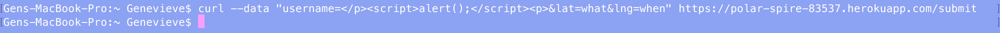
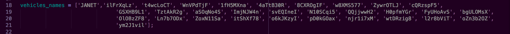

- Location:
vulnerability at https://polar-spire-83537.herokuapp.com/submit, effects at https://polar-spire-83537.herokuapp.com/
- Severity:
High -- XSS is a high severity vulnerability because it allows hackers to completely manipulate your webpage into whatever they want through HTML, CSS, and JavaScript.
- Description:
I found this vulnerability through the POST '/submit' method and the GET '/' method. The POST method allows one to add documents to the mongoDB without filtering the username content. The GET method then accesses the username content and puts it into HTML format so that it can be added to the webpage's file. This allows for usernames containing JavaScript to be executed when https://polar-spire-83537.herokuapp.com/ is loaded. I found this just by playing around with curl and the POST '/submit' method.
- Proof:
Inserting JavaScript into database:
JavaScript that was stored in the database being executed:

- Resolution:
This vulnerability can be resolved by stripping the caret, semi-colon and slash characters out of the username before its stored in the database (line 97) or before the username is added to the HTML dom (line 39).
Where the username is not groomed:
Where the database information is put into the HTML DOM:

- Location:
vulnerability at https://polar-spire-83537.herokuapp.com/submit
- Severity:
Low -- this probably won't cause the app to crash or for hackers to compromise others' data
- Description:
I found this vulnerability through the POST '/submit'. When a POST request is sent, the lat and lng parameters are never checked for accuracy. They are converted to floats, but the server never actually checks that it was completely converted to a float after or that the lat and lng were in valid ranges. This fault allowed me to submit lat and lng values that were out of range and lat and lng values that weren't floats. In both cases the data still ended up in the database. This could be a problem in the future if the creator changes the maps from Google Maps to another source if that source does not validate lat and lng before rendering pin-points on the map.
- Proof:
Creating a user with lat and lng values out of range:
Out of range lat and lng values stored in the database:
Creating a user with non-float lat and lng values:
Null values showing up in database:
- Resolution:
This can be easily remidied by adding a JavaScript function that takes in the lat and lng values before they're entered into the database and returning a boolean indicating if the lat and lng values are valid. This check should go after the lat and lng have been converted to floats. In this function, the lat and lng can be checked to see if they're both in range and if they're actually floats.
- Location:
index.js
- Severity:
Medium -- This privacy vulnerability is medium because it compromises every driver's privacy. This may also allow people to assume the identity of the driver since they can just take that username, set it as their own and act as a driver. This is a huge risk to potential passengers because they think they're getting a verified driver, but they're not. This raises the issue of verification. This app has none. All you need is a username, no passwords.
- Description:
I found this vulnerability while looking through the index.js file.
- Proof:
The code where vehicle usernames are exposed:
 - Resolution:
This problem could be resolved best by creating an additional database of vehicle usernames behind the scenes. This way only authorized people can have access to driver's usernames. I would also suggest adding an additional verification step of passwords so that strangers can't just pose as drivers if they get the username of a driver.